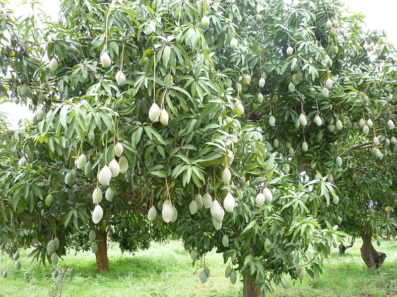
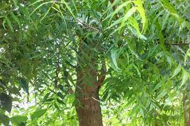

About
Trees are more important. As the biggest plants on the planet, they give us oxygen, store carbon, stabilise the soil and give life to the worlds wildlife. They also provide us with the materials for tools and shelter.



